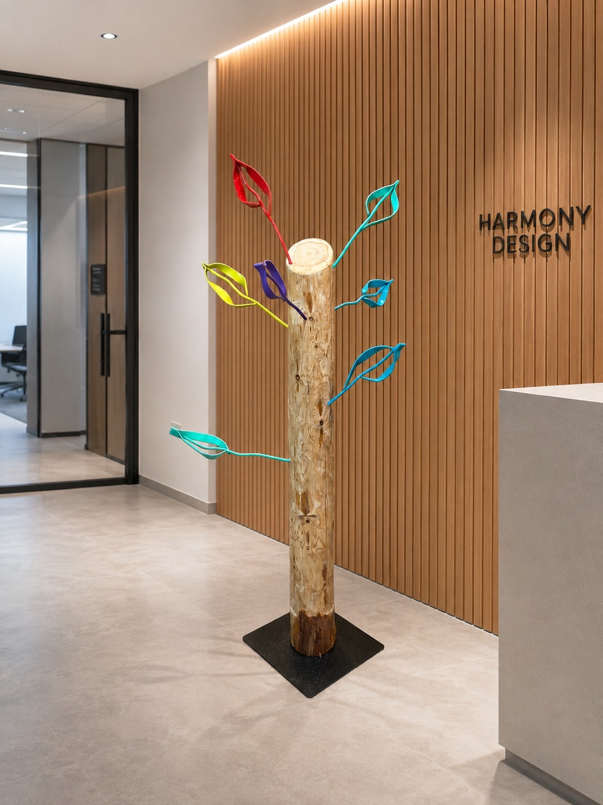
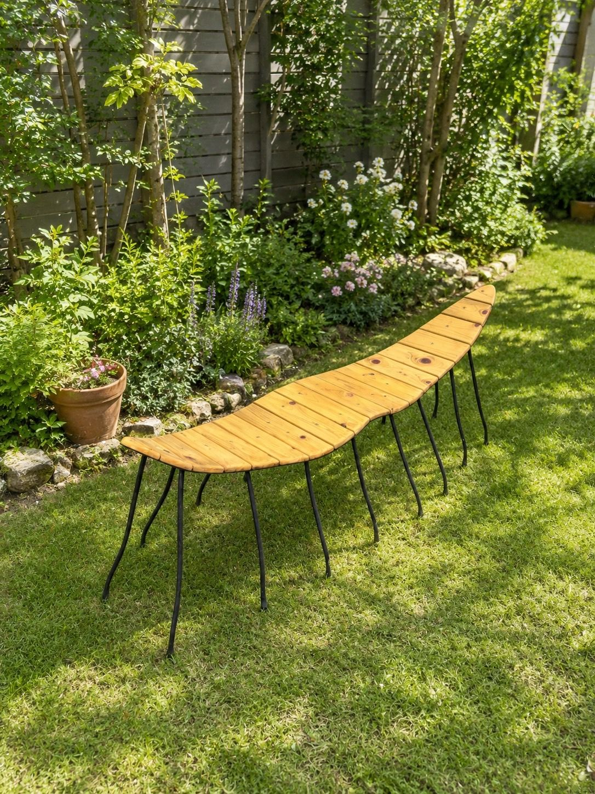

設置作品写真 3枚
設置作品写真 3枚湧昇の夢
中土佐町立美術館（高知県）の入口赤・黄・青・白の鉄の羽が、黒い鉄の柱に沿って空へ舞い上がる。美術館の入口で来館者を迎えるモニュメントです。
おすすめ：本社エントランス・公開空地のシンボルに鉄の作家・池内卓也の作品を、オフィスのエントランスや受付にレンタルでお届けします。季節ごとに作品を入れ替えて、毎日の景色に新しい出会いを。
溶接職人として鉄と向き合ってきた三十余年の技術で、彫刻をつくる作家。高知の工房で、一点ずつ手で仕上げています。
受賞受賞タイトル 設置設置場所 出品出品した展覧会
| 作成年度 | 作品 | 受賞タイトル／設置場所 | |
|---|---|---|---|
| 2011 |  想芽 想芽 | 受賞高知県展 褒状 | 作品ページ → |
| 2013 | 宴の色 | 出品高知県展 | 作品ページ → |
| 2014 | 鉄覚醒する自我 | 受賞高知県展 特選 | 写真準備中 |
| 2014 | 無題5 | 受賞新象展 佳作賞・ホルベイン工業賞 | 作品ページ → |
| 2016 |  守るべきもの 守るべきもの | 設置高知の神社の参道 | 作品ページ → |
| 2016 | 死守 | 受賞新象展 佳作賞 | 作品ページ → |
| 2017 | 無題6 | 受賞新象展 展賞 | 作品ページ → |
| 2018 | 無題3 | 出品高知県展 彫刻部門 | 作品ページ → |
| 2018 | 無題4 | 受賞新象展 大阪府知事賞 | 作品ページ → |
| 2019 | 無題2 | 出品新象展 京都展 | 作品ページ → |
| 2020 | つなぐ | 受賞高知県展 先端美術の部 褒状 | 作品ページ → |
| 2020 | 無題1 | 受賞高知県展 先端美術の部 褒状 | 作品ページ → |
| 2023 | 問う | 設置四国の海岸（波打ちぎわ） | 作品ページ → |
| ─ | 湧昇の夢 | 設置中土佐町立美術館（高知県） | 作品ページ → |
| ─ |  卵 卵 | 設置井上ワイナリー（高知県香南市） | 作品ページ → |
| ─ |  彩りの鉄 彩りの鉄 | 設置井上ワイナリー（高知県香南市） | 作品ページ → |
| ─ |  植物 植物 | 設置竹林の庭（屋外） | 作品ページ → |
| ─ |  復興芽図 復興芽図 | 設置屋外の展示会 | 作品ページ → |
| ─ |  ミノムシ ミノムシ | 設置ギャラリー展示 | 作品ページ → |
| ─ |  丘の上の植物 丘の上の植物 | 設置屋外（丘の上） | 作品ページ → |
※「─」の作成年度は確認中です。写真の一部は公式サイト（iwatakuniyasu.wixsite.com/ikeuchi）掲載のものです。
エレベーターを降りてから会議室に着くまで。来訪者の動線に沿って、作品の置き方を考えました。
エレベーターホールは、会社の世界観が最初に伝わる場所。大きな作品ひとつで、空間の印象が決まります。

受付横のツリーハンガーは、来訪者のコートや傘を掛けられる“使える彫刻”。おもてなしと話題を同時に。

近くで見るほど発見のある作品は、待ち時間の手持ち無沙汰をやわらげ、最初の雑談のきっかけになります。
ラウンジや会議室の窓際に、鉄の植物を。緊張をほぐし、話しやすい空気をつくります。
オフィスへのアートレンタルは、国内でも複数のサービスが登場している導入方法です。鉄の彫刻も、レンタルなら気軽に始められます。
| レンタル | 購入 | |
|---|---|---|
| はじめやすさ | 期間を決めて、まず試せる | 購入の判断が必要 |
| 入れ替え | 季節・周年・イベントに合わせて交換できる | 基本は同じ作品を置き続ける |
| 移転・レイアウト変更 | 新しい空間に合わせて作品を見直せる | 新しい空間に合うか検討が必要 |
| 気に入ったら | 作品によっては購入のご相談も | ── |
ブランドを体現する一点を、来訪者の動線上に。
期間限定で、特別な日の空間演出に。
自社製品とあわせて、世界観をつくる背景に。
鉄で編んだ卵と、見守る鳥。
エントランス鉄の葉がフックになるコートかけ。（設置イメージ）
受付・クローク
錆鉄の花と石、透かしの蝶。
応接・待合鉄の茎と葉、種のかたち。
ラウンジ・窓際
ねじった鉄筋の幹と、広がる枝と根。
吹き抜け・屋外
杉の座面と鉄の脚。（設置イメージ）
屋上・テラス※ 掲載作品のレンタル可否・時期は作品の設置状況により異なります。「設置イメージ」は雰囲気を伝えるための画像です。
期間・料金は、作品・設置場所・搬入条件をうかがってお見積りします。
オフィスの写真と置きたい場所、期間のご希望を。
動線と空間に合う作品・置き方をご提案。
必要に応じて設置後の姿を映像で確認。
業務に支障のない日時をご相談のうえ。
期間終了後は返却、または次の作品へ。
NEW2026年10月撮影 ／ 作家 池内卓也
2026年10月に撮影した写真と映像です。社屋のエントランスや受付、屋上テラスに置いたときの存在感を、映像でご確認ください。
設置作品写真 3枚赤・黄・青・白の鉄の羽が、黒い鉄の柱に沿って空へ舞い上がる。美術館の入口で来館者を迎えるモニュメントです。
おすすめ：本社エントランス・公開空地のシンボルに展示写真 2枚錆びた鉄の胴体に、レースのように透かし彫りした羽。台座の上で、光と影の模様をつくります。
おすすめ：受付・応接の展示台に設置事例写真 3枚細い鉄の帯を幾重にも編んだ大きな球に、身を乗り出すような人の姿。見る角度で表情が変わります。井上ワイナリーの高台の庭に設置されています。
おすすめ：社屋の前庭・屋上に 実物
実物これまで設置イメージでご紹介していたベンチの実物です。木の座面に細い鉄の脚、先端には鉄の頭がつきます。
おすすめ：屋上テラスの休憩スペースに屋外に設置写真 2枚鉄の葉と種のかたちが、空に向かって伸びる。草木の中に立ち、風景に溶けこむ作品です。
おすすめ：中庭・植栽帯に 施工例
施工例花のモチーフを透かしたロートアイアンの門扉。有限会社アイエル物産が手がけてきた、暮らしの鉄の仕事です。
おすすめ：社屋の門扉のオーダー制作に※ ページ上で流れる短い映像は音声なしです。「全編を見る」「映像を見る」はYouTubeで再生します。掲載作品のレンタル可否・時期は作品の設置状況により異なります。門扉はレンタルではなくオーダー制作のご紹介です。